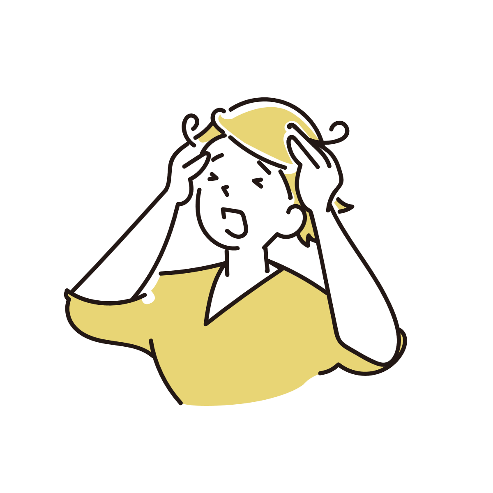
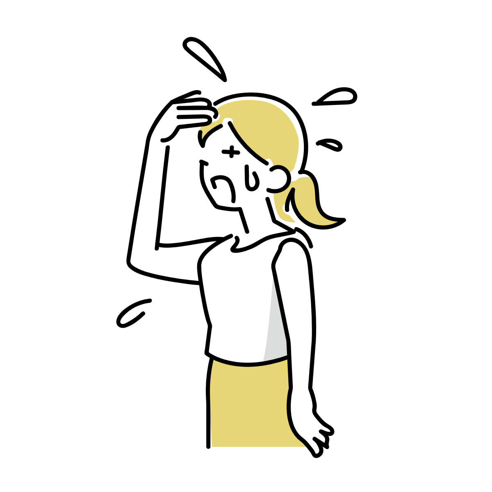
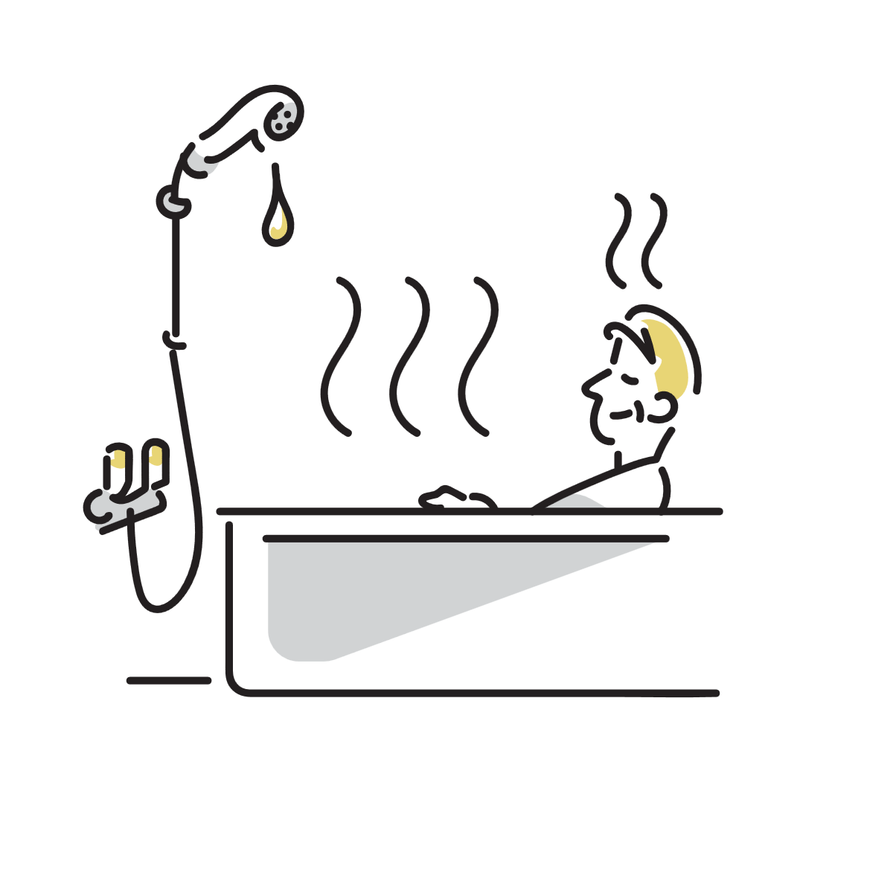

緊張すると頭がかゆくなるのはなぜ？
人前に出るときや強いプレッシャーを感じたとき、 急に頭がむずむずしたり、 無意識に頭をかいてしまうことがあります。
これは単なる気のせいというより、 緊張によって体の反応が変化し、 皮膚の感覚が敏感になることで起こる現象と考えられています。

緊張すると体は「警戒モード」に入る
人は緊張すると、 自律神経のうち交感神経が優位になります。
これは危険やプレッシャーに備えるための自然な反応で、 心拍数の上昇、筋肉の緊張、発汗の増加などが起こります。
頭皮も皮膚の一部なので、 この変化の影響を受けます。 血流や汗の状態が変わることで、 普段は気にならない刺激が 「かゆみ」として意識されやすくなることがあります。
つまり頭皮そのものに大きな異常がなくても、 緊張時だけ感覚が強くなることは十分あり得ます。
なぜ「頭」がかゆくなりやすいのか
緊張時のかゆみは全身で起こり得ますが、 特に頭皮は反応が出やすい場所です。
頭皮は汗と皮脂が多い
頭皮には汗腺や皮脂腺が多く存在しています。
緊張によって汗が増えると、 蒸れや刺激が起こりやすくなり、 むずむず感につながることがあります。
神経が密集している
頭皮には細かな感覚神経が多く分布しています。
緊張時は脳が周囲の変化に敏感になるため、 わずかな刺激でも強く感じやすくなります。
筋肉の緊張が関係することもある
緊張すると首や頭まわりの筋肉がこわばります。
その影響で血流や皮膚感覚が変化し、 頭皮の違和感として現れる場合があります。
緊張だけでなく「熱」や「刺激」でも起こることがある
頭皮のかゆみは、 緊張だけで起こるとは限りません。
辛い物を食べたときや、 暑い場所にいるだけで 頭がむずむずする人もいます。
これはどちらも、 体温調整や発汗に関係する神経反応が 強く働くためと考えられています。
辛い物でかゆくなる理由
唐辛子などに含まれるカプサイシンは、 体に「熱い」という刺激を与えます。
すると体は汗を出し、 血流を変化させて熱を逃がそうとします。
このとき頭皮の神経も刺激され、 むずむず感やかゆみとして 感じることがあります。
暑い場所でかゆくなる理由
気温が高い場所でも、 体は同じように熱を逃がそうとします。
汗や皮脂が増え、 頭皮が蒸れやすくなることで、 軽い刺激がかゆみとして 意識されやすくなります。
つまり「緊張」「辛さ」「暑さ」は別々に見えても、 体の反応としては似た部分があります。

「かく」と一時的に落ち着く理由
頭をかくと、 一時的に楽になることがあります。
これは皮膚への刺激によって、 脳の注意が切り替わるためと考えられています。
また、 軽い刺激によって神経の反応が変化し、 かゆみが弱まったように感じることもあります。
ただし強くかき続けると、 皮膚が傷つき、 逆に刺激に敏感になる場合があります。
フケや乾燥が重なると悪化しやすい
もともと乾燥肌や脂漏性皮膚炎傾向がある場合、 緊張による刺激が加わることで、 かゆみを強く感じやすくなることがあります。
つまり「緊張だけ」が原因というより、 頭皮状態と神経反応が重なって 起こるケースも少なくありません。
ストレスとかゆみの関係
強いストレス状態では、 かゆみに関係する神経伝達物質や 炎症反応が変化することがあります。
そのため、 皮膚に大きな異常が見当たらなくても、 かゆみだけが強く現れる場合があります。
特に 「緊張する場面だけで起こる」 「終わると落ち着く」 という場合、 自律神経やストレス反応が関係している可能性があります。
少し楽になることがある対策
緊張による頭皮のかゆみは、 「完全に消す」というより、 刺激を減らして悪循環を弱める方向で考えると整理しやすくなります。
頭皮を乾燥させすぎない
洗浄力の強すぎるシャンプーや、 熱すぎるお湯は刺激になることがあります。
頭皮のバリアが弱ると、 緊張時の刺激にも反応しやすくなります。
汗を長時間放置しない
緊張汗による蒸れが刺激になる場合があります。
タオルで軽く押さえるだけでも、 むずむず感が軽くなることがあります。
首や肩の緊張をゆるめる
首まわりのこわばりが強いと、 頭皮の違和感につながることがあります。
深呼吸や軽いストレッチで、 体の緊張を少し下げるだけでも 変化が出る場合があります。

受診を考えたほうがよい場合
一時的なかゆみは珍しくありませんが、 強い炎症や湿疹、 出血、 広範囲のフケなどがある場合は、 皮膚疾患が隠れている可能性があります。
また、 日常生活に支障が出るほど症状が強い場合は、 皮膚科などで相談することも選択肢になります。
参考情報と注意点
かゆみの原因は複数重なることがあります。 強い症状や長期間続く場合は、 医療機関での確認も検討してください。
関連アイテム
 | 価格:4500円 |